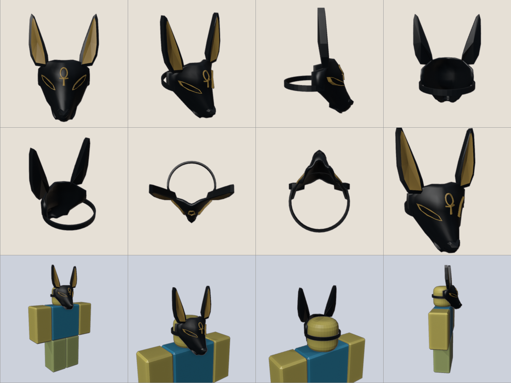
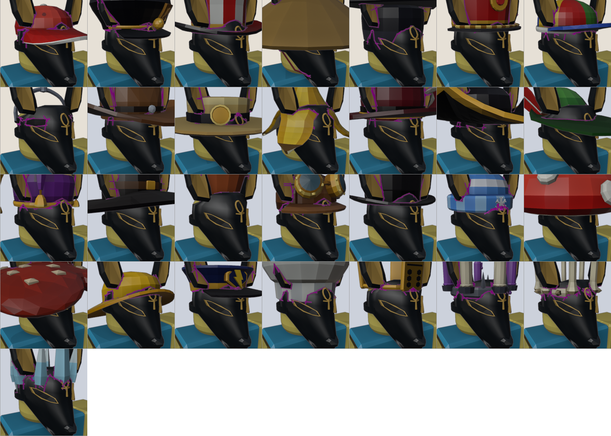
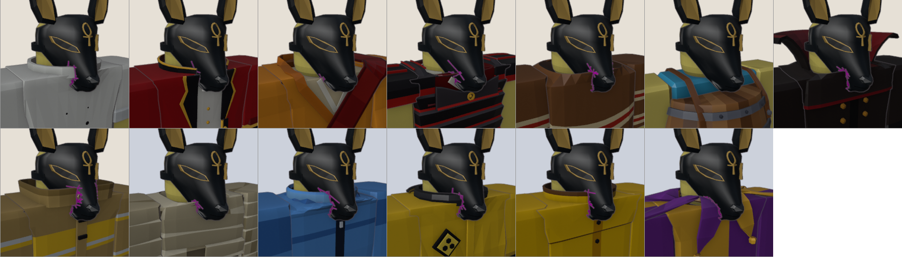
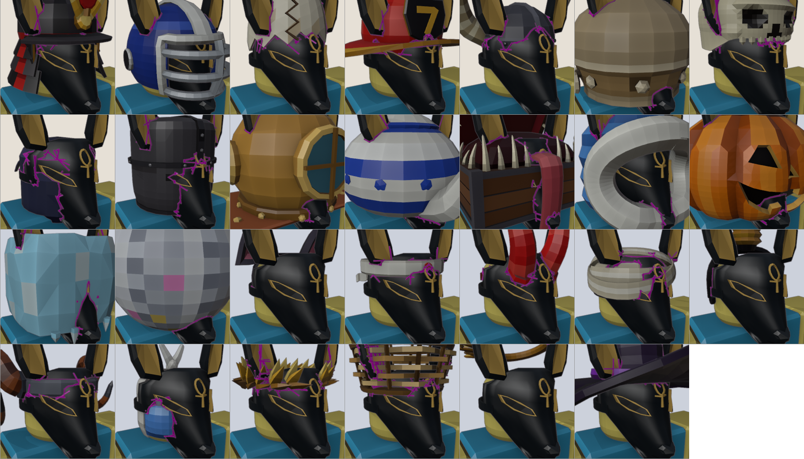
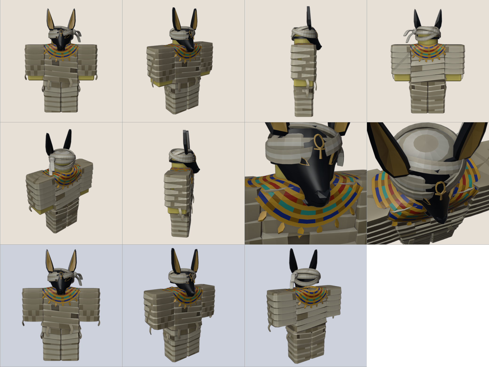

Return to interactive accessory viewer
2,046 triangles. No z-fighting, floating islands or detected back-facing holes. Card body check: zero; stricter mummy check finds a 0.008-stud hidden head intersection.
Tested all 29 caps/crowns, 27 other headwear pieces, all 13 coats, plus the complete mummy set. The full scan and radial head maps were also run. Magenta marks show intersections, including buried seams.
Remaining overlaps: ears through hats and enclosing helmets; brims across the upper mask; tall coat collars meeting the lower side/rear rim. The current Head Bandage covers parts of the brow and eye outlines. This is not a universally clip-free model. No in-game playtest has been claimed.




